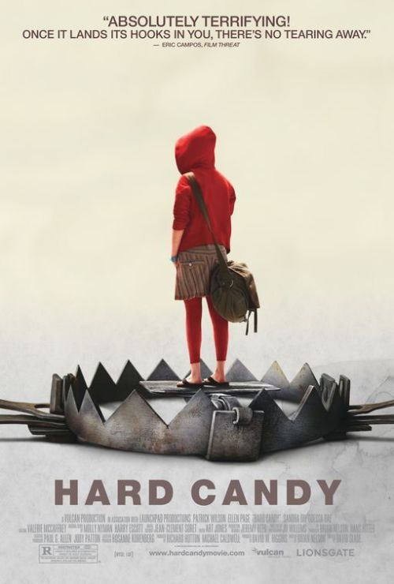
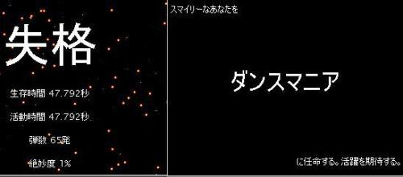

无法可写的日记
想了半天，还是写不出来。 何以判定适合孤独否？
`
学一个陌生领域的东西总是非常困难。因为无从起步，无从判断水平。学校生涯有前辈设计的教程一步步带领学习，非常轻松的事情。 前一种，可能——也许是绝对——在过程中掌握一种学习能力，这是个受用终生的东西；后一种，得到的大概不过就是些知识，这些知识在社会生活中也许慢慢——或者干脆立刻——失去使用价值。当剩余的知识不足让你过满意的生活时，怎么办。没有学习能力会是件很悲惨的事情。后果就是人群中比例最大的底层，农民、工薪阶层、个体户、无业游民，等等。 当然了，理论而已。等有了资本证实时才说得过去。
http://blog.sina.com.cn/u/1240196154
以前某段时间写我和她的某些。刚才看了，好可爱。哎。
不会写标题
下午唱歌唱high了，到那边时都还刹不住。 晚上还想唱，可惜不行。扰民。 MMD，每次看她的一些都是十天半月以前的。感觉我被埋在三叠纪的土壤中露个脑袋迎风流泪。好愤怒的无奈。
log3
耳朵里充斥声音，脑子里充斥怀旧和对未来的遐想时——麻醉。 好象生活一切漂亮起来。 还是得在现实中努力。带着不断被销蚀的自信挣扎。
log2
看书看晕了快。今天看了多少？3本好象，不全，还看了些散文章、概念。真晕了。 到三门峡取密码，结果没带身份证。跑千僖，早上没吃饭结果见吃的就想买，买了100多块钱的东西。回来。 中午吃饭完过来止不住的瞌睡，躺到4点多。晚上学生家长请吃饭，新开的老鸭汤，春园街那，一点都不好吃。怀疑我都没吃饱。 坐电脑前没啥吃的，喝袋奶，一些馍片。抽了好多前天小叔给的红河V8。据说50块一盒。汗，这么一会儿十几块钱被抽掉了。 再一支，然后睡觉。累死了。
log
今天干了些什么。 睡觉，昨天球打得太累，11点睡一直到今天早上快11点。12小时在无知无觉中度过，因为没有梦做。 然后准备挂征途还2peng的钱。对这个游戏真是累了，它却又要更新。更新就更新吧，更半天完不了，干别的事电脑又显得非常慢。看下任务管理器，MD它的俩进程加起来占CPU到100%。怒了，关了。还钱也不说了。 然后就接电话叫过去吃饭。挂了过去。吃的什么来着？真想不起来了。 下午就看会儿书。小叔叫去医院打球，去了，打得不爽。累得半死回来。 直到现在这里。 11点半了，本来10点时想睡觉的，鬼使神差又到现在。刚才一叫“恋爱达人”的加QQ，——弄验证了，要不太烦，陌生人里总是一堆，一个一个删得闹心——验证里什么也没。犹豫半天还是通过了。几分钟后打字过来。说会儿不知所谓的东西。无聊过后寂静，不说话了，就把她删了。 Jennifer Lopez新专辑。好象也有点老歌。郁闷，现在听歌真听不出感觉了。食之无味弃之——又觉得空乎。没声音也带个耳机，又觉得SB，只好听歌，听着还没感觉。靠了。 废话真多。随便一打就几百字。想写800字的作文真不跟放屁似的。又恨自己不断怀旧，不愿承认的脆弱——没准不是，但没办法呢，自己给个概念说也许无意识地不自知，这个无法证伪的东西呢。自己把自己扔坑里，谁能拉你。 不写了。一个LOG，以后几天一LOG。作为活着的记录。
自恋了
无法恋她。 所以自恋了。
.`
时间过得飞快。 如果我们每天都在长大或者变老，那也是件值得庆幸的事情。可惜了，懵懂不知所谓，盲目中跌跌撞撞。依然白驹过隙。 倒春寒的日子里，温度也显得冰冷。总是天上迷朦的水汽，以至在某个不知觉的时候下起淅淅沥沥的小雨。迷失吗？或是一种沉浸的幸福。 上面是一些比较恶心的文字。写这个是说，某些SB们，我抱着鸡也能下蛋，所以别太拿自己当人。 无聊时候的无聊愤怒。也别当回事。
`
下午要去打球。 这礼拜一天下雨，另一天去了运城。没打成球，手痒的不行。 blog写东西的面版换了。看着不错。干净。 说到干净。喜欢动物的纯粹。至于人，什么叫做清纯的东西，本身就透着恶心。 极端了，SRY。
``
耳机开很大声，但不想唱了。好累。 那天问明白YY原来是“意淫”的意思。我错了，以后不乱用了。还有GCD，GA之类的。仿佛成一种文化了。 它们远去了，他们远去了，她们远去了。 我困在这里。 未来如何重建，暂时还没有答案。
年
明天就30了。 要过年了。
我是你爸爸
这个是王朔的小说。初中时看过，里面有一句话印象极深：“他根本不想在他这儿讨个公正”。情景是儿子在学校里纠正老师的错，闹了矛盾，学校打压他，爸爸替他写了肉麻的检查让他抄，他不抄，结果挨了打。他同学来看他，他爸问他学校的情况，他不让说，把同学轰走。 当时看着很强烈的共鸣，哭掉了。现在又看这小说，看到这里却没什么感觉了。过来人吧，大概能这么解释。于是发现一个比较严重的问题。觉悟只能在看与自己的状态有关联的东西时产生。一个时间只能有一个状态。那了解的东西就很局限了。这怎么办？好象没办法。叹息。所有的个体穷其一生的所得只能跟随他烟消云散，其他人只能从新学习——学前人的经验也还是学习。这个不是累积的，我们只能在一次次的重复中蹒跚缓慢进步，真是比较惋惜的一件事。
The Island
某天前为期QQ上神秘地说了句“8号那天下午打球”。我问他几点哪里，他驴唇不对马嘴道“我在同学家”。 现在8号，会发生什么事情？ 想起maya的新纪元来了。 另外抽烟抽到难受。写语文的题，靠，好久没这么痛苦过。背酸手腕疼。可怜的花朵们。
`
刚看了《80年代荷尔蒙》。中国人拍的。一个顶多30岁的导演吧。也是(所谓)80后。 差不多是个记录片。采访各种人，谈论关于性的种种。 这个不会有太多的想法。就是了解吧。像《藏在书包里的玫瑰》。 有时候会有这种感觉。自己不是特殊的，也许你看到的事物令你感觉自己特殊。但多看一些，或者真实的了解到一些。就会发现你跟其他人是一样的。你的未来，也就是那么回事。并不是说没有成就什么的。只是说你就是人，就是这么个物种，在这个时间和空间里。你再偏离，再与众不同，能做出的也就这些。好象远古人的再杰出的发明也无法令他们"一小步"，或者将什么发送出太阳系。我说的只是这种局限性。也许更小一些。 里面有大学生，宿舍的情景，操场，有个人的介绍是"一流控球后卫"，还有某人在本子上画的漫画。于是幻想。自己的未来的几年(十几年？) 还有一个比较漂亮的女的，介绍是"外企白领"。讲的关于旅游，一些漂亮的地方、风景、感觉。现在又想起《动物世界》里那些无限漂亮的画面，懒洋洋卧在树枝上的猎豹，下方草地上尘土纷纷的迁徙的角马，追逐中惊异的蹬羚的跳跃，无数不知名的海鸟扎入水中捕鱼，整个蓝的纯净的海面上无数柱状的白色水花……是不是有点想的偏了``？哈哈，思维。 了解其他的真实是其乐无穷的事情。我们将要做什么。我们的生命。遥远的寒冷的群星。宇宙，基因，幻想。 不YY，不YY，只是文字的作用如此，没有办法。
`
今天写太多了，掌嘴先。 无聊又搜她的QQ。然后进空间``居然有东西。汗个。我太轻视人了。 日志大多是抄的歌词。感叹，好老的歌们。 也有写学校的。放假，篮球赛，类类。 丝毫没有看出她想了什么。 日期都是06年9到10月间的。那时侯放假么？暑假？ 好象45几班的。忘了。瞬间忘。 分这么多行。是不是叫诗了。发现自己这里那里留了很多YY的东西。想删。不过坚持做过的就让人看了。 唯一的访客是 流年 小姐。以后会写上我？ 找不到那空旷繁华校园中她的影子。 如果有，我们还是一无所措。 天是蓝的。 他妈的哪个混蛋说天是蓝的？
`
某人在新的blog里写东西，也许从此。并且没有我的链接。 新生活什么否？ 现在在听Eminem的歌。说唱。其中一首跟那个《十元人民币》的旋律一样。当然，是咱们抄人家的。 WC. 8
时间足够你爱
标题是星河的某个签名，原文是《时间足够你玩》，调侃Asimov的。 陶吉吉的某首歌开始有句好象"time,not enough"。 时间不够吗？试试仅。 开始了。着实不能停止了。
HardCandy
这篇还是关于电影的。 发现自己这段时间真是看了好多电影，有内容的。不像某些娱乐垃圾。 中文名《水果硬糖》。这片真是非常之强。自己才17大概刺激不深。成年男性就……在post baidu里看到好多人深受刺激。哈哈。 关于阉没阉的问题。仿佛不是很重要。Helay的目的就是精神折磨。 还有人骂那男的SB，什么"can't handle a little girl"。试想，你干了那些(大众道德)有愧良心的事又被如此``恩，折磨``的时候，还有余力去想怎么逃脱报复？ 另外也有骂女主角(Ellen Page)难看的。奉劝下。lolita情结我也在一个叫lolicon的论坛上了解了些。也许平常人觉得不怎么样的那些人会极端迷恋。不要拿自己的尺子量别人。 还有一些恐怖片与此有联系。不过总是有点不敢看。虽然也许不会太害怕。但自从看过cube之后就一直有点抵触恐怖电影。《门》就没看。《Event Horizon》也一直是个魇。不说了，一会儿睡不好了。 把海报贴下。想被挑战接受能力的同学们可以看下，花朵们算了，会被吓到的。

still lolita
看了关于lolita的各种评论。好象97版比62版的评价高```郁闷。我看了62之后一看97的封面就觉得烂````哎。女主角太难看了。放一般电影里就让人没兴趣，演lolita简直倒胃口~~~ 至于忠于原作之类的，97的没看全，不知道。62确实有点改。不过管他呢。喜欢lolita是喜欢那种感觉。感觉不一定要用同一种方式表现吧？ 不说了。就是不喜欢97的。怎样随怎样。
`
要睡觉了。 有事情干的时候通宵没有感觉。现在却已经干枯得不行了。 TMD心情。 8。
ai
心累。 不是矫情，表现在玩特训总是看着一个子弹过来就是不想躲。这有没有什么深刻含义？
!!!!!!!!!!!!
疯了，玩到最后整个脑子都是热的
psycho
看了《A.Flew.Over.The.Cuckoo's.Nest》，飞越疯人院。
天，虽然都是不懂。但觉得这片子甚至比《肖申克的救赎》还要深刻。《肖》的故事禁锢了它隐喻和讽刺的强度。《飞》没有，它给你更大的空间。当你想到一些东西然后觉得自己恍然大悟时紧接着它就让你又陷入疑惑。你会问为什么。就像我数次暂停下来问为什么。它到底要告诉我们什么。不懂，还是不懂。即使你想到的那些东西还是觉得牵强。你会觉得它没有那么简单。不管你想到头痛，还是会始终这么觉得。《肖》是信仰，《飞》是困惑。信仰能让人坚持，但没准是盲目的坚持。困惑则带来思考，思考带来进步。
不知道是不是年龄小点了的原因。看的好多东西都不懂。《2001 Space Odyssey》《Lolita》《The.Big.Brother》,还有上面这两个。晕了```
或者是这个原因？：我们这个国家的人民被如此广泛和深重地制度化（institutionalize），所以我们几乎看不到有别于此的事物？就像Matrix，“它是放在你眼前蒙蔽你远离真相的世界”？如果真是如此很恐怖。我们看不到制度如何冲破制度？再晕````
写的好玄乎。大家别被我忽悠了。推荐大家看下这些电影——别当故事看，否则你还不如去看肥皂剧。
另外把Matrix里的那段台词写全，因为真是非常喜欢：
Morpheus:Do you believe in fate,Neo.
Neo:No.
Morpheus:Why not?
Neo:Because i don't like the idea that i'm not in control of my life.
Morpheus:I know exactly what you mean.
……
Morpheus:The Matrix is everywhere.It is all around us.Even now in this very room.
You can see it when you look out of your window,or when you turn on your television.
You can feel it,when you go to work,when you go to church,and when you pay your taxes.
It is the world that has been pulled over your eyes to blind you from the truth.
Neo:What truth?
Morpheus:That you are a slave,Neo.
Like everyone else you born into a bondage,born into a prison that you cannot smell or taste or touch.
A prison for your mind.
Unfortunately,no one can be told what the Matrix is.
You have to see it for yourself.
天，虽然都是不懂。但觉得这片子甚至比《肖申克的救赎》还要深刻。《肖》的故事禁锢了它隐喻和讽刺的强度。《飞》没有，它给你更大的空间。当你想到一些东西然后觉得自己恍然大悟时紧接着它就让你又陷入疑惑。你会问为什么。就像我数次暂停下来问为什么。它到底要告诉我们什么。不懂，还是不懂。即使你想到的那些东西还是觉得牵强。你会觉得它没有那么简单。不管你想到头痛，还是会始终这么觉得。《肖》是信仰，《飞》是困惑。信仰能让人坚持，但没准是盲目的坚持。困惑则带来思考，思考带来进步。
不知道是不是年龄小点了的原因。看的好多东西都不懂。《2001 Space Odyssey》《Lolita》《The.Big.Brother》,还有上面这两个。晕了```
或者是这个原因？：我们这个国家的人民被如此广泛和深重地制度化（institutionalize），所以我们几乎看不到有别于此的事物？就像Matrix，“它是放在你眼前蒙蔽你远离真相的世界”？如果真是如此很恐怖。我们看不到制度如何冲破制度？再晕````
写的好玄乎。大家别被我忽悠了。推荐大家看下这些电影——别当故事看，否则你还不如去看肥皂剧。
另外把Matrix里的那段台词写全，因为真是非常喜欢：
Morpheus:Do you believe in fate,Neo.
Neo:No.
Morpheus:Why not?
Neo:Because i don't like the idea that i'm not in control of my life.
Morpheus:I know exactly what you mean.
……
Morpheus:The Matrix is everywhere.It is all around us.Even now in this very room.
You can see it when you look out of your window,or when you turn on your television.
You can feel it,when you go to work,when you go to church,and when you pay your taxes.
It is the world that has been pulled over your eyes to blind you from the truth.
Neo:What truth?
Morpheus:That you are a slave,Neo.
Like everyone else you born into a bondage,born into a prison that you cannot smell or taste or touch.
A prison for your mind.
Unfortunately,no one can be told what the Matrix is.
You have to see it for yourself.
电影
晚上看了两个电影，一个《TheShawshankRedemption》，一个《Lolita》。 第一个就是《肖申克的救赎》，有翻译成《刺激1995》的，确实简直是对这部电影的侮辱。很多东西没看懂``也许以后再看会好些。哭了N次。莫名的感觉。 然后又看了改编自的书，作者就是那个现在写恐怖故事的史蒂芬·金。 看完不想睡觉，又没有事情做。就又看了《Lolita》，记得以前有篇blog里写过，洛丽塔，迷人而邪恶的少女。讲恋童癖的。也许深刻。1962年的片子，很多东西让人惊讶。不过说实话，一点也没看懂，跟看完《2001太空漫游》的感觉一样。也没期待里的激情戏。不过女主角真是漂亮，一举一动也让人着迷得不得了。不过恐怖，真爱上她后果跟男主角一样，崩溃掉。这电影的导演好象还拍过《发条橙》。又一步很深刻评价很高的电影，像《BigBrother》。这几个都有原作的书。以后看看。 现在是真晚了。虚弱了已经。准备睡觉。
忧郁的花朵们
看了些朋友的QQ空间，如此感觉。
`
10天看编程不知道能看多少。试下。了解下学习速度。 C，汇编。现在知道将看的。其他再说。
`
还是摘抄。 “……临走看电视上街舞，那女的们真难看，该跳室内舞免得引发交通事故……” “……被班猪叫去训话，鲜然听到有人说我是学习努力方法不对。郁闷的是这说法比说学习不努力更惨。后者好比干了个女的但干得不爽，前者根本就干了个男的。……” “……先后喝掉两瓶水，是那种不值一块钱的一块钱的水。……” “……后来前面俩人表演课文内容，我咋说句什么，旁边听课老师灰过来一眼。……” “……当然只针对自己，别人看来即是肉麻。哎，爱情还真他妈排他。……” “……据说李兴在萌芽上发表了一篇文章——据李兴说。……” “……我家有一所房子，面朝阴沟，水暖花开……” “……现在好象班里以前的同学都不甚热忠于打球了。我不愿丢了这——也算个本事吧。因为不为什么，就是一种坚持。得有个坚持，即使在某方面未必很大意义。比方说我坚持不听语烛讲小说，算是无聊的坚持，但推广之就能有勇气不折于学校淫威。后者就是我想要的。还有，好烂的比方。……” “……现在语文自习，烛让干的都不是我想干的，便写日记。下午第一节自习的时候就觉得无聊，看不进课本做不出题，而觉又在某节课时睡饱了，只好硬着头皮看萌芽，每看完一篇就想，八十啊——这是李兴拿的稿费。两个八十就一百六了，四个八十就三百二了，而又觉得那么多钱也没什么用，又买不下个媳妇儿，也买不到个工作，充其量只能花掉，花掉又好象得不到什么。现在才觉得高中真是苦啊，还苦得那么荒谬，使人像玻璃窗前的苍蝇。……前途光明，没有出路。……” “……一个多礼拜的你请我我请你之后他开始大肆呼吁AA制，我跟他讲能量守衡，他闹急一点儿不听。他和C都很纪律的样子，打饭要排队，被我教化之后硬着头皮去插。我说你看这就是AA制的坏处，插队一次三人，多么损人不利己。……” “……课堂是一条浅浅的臭水沟，我在外头，老师在里头。……”
`
又看以前的日记。高一在盐化时候的。虽然比较YY，但也有些惊异之处。就是种不认识自己的感觉。 “……愈发感到学校生活的葬丧性灵，学生的懵懂与麻木，教师的自负与专独。也许人各有志志各有道，道不同不相与谋，然而现在的情况是即罢不能有所为，连想有所不为都不能。被人所缚于此道上，看着无面孔的众生群踽蹒跚，自己也被胁被迫地做出各种媚世姿态，实在是件很痛苦的事情。……” 小解释下，“不能有所为”是说做不出有效果的抗争应试教育的行为，“有所不为”是说不折腰于应试教育。 真实比较惊异，写得跟TMD文化人似的。哈哈。 也不知道以后看现在什么样。那天在个网站上看了个“写给5年前的自己（的信）”。就也想写，没写出来。 不说了，晕了。耳机里现在是HilaryDuff的歌，什么歌不知道。
时间好快``
``
`
生物一册看完。晚上做题。马上5点过去练球。 很慢，以后快点。 和田壮QQ，他们电脑课。不知道他是打字慢还是什么，说话困难到死。 sg12的歌总是听着听着“缓冲2%”，或者有时候跳到一个莫名IP，端口88。不知道什么东西。也查不出毒。不管了。 现在没办法用MPC听linkin park。 下。
`
睡觉了。 早睡早起身体好。
`.
听FISH的歌。 然后就忍不住地想她，现在8点多，她在干什么撒？ 点点点。 拒绝成为小动物。 完毕。
`
做个标签。自己骂。 喜欢HilaryDuff的LittleVoice。 曾经看过个电影就叫LittleVoice，中央6台翻译过来的，里面一男主角的老管女主角叫LV，我纳闷不已，后来明白是缩写。 有这样的缩写~~``名字起的衰被缩成WC怎么办
`
李星同学说要借书，阴差阳错两天没有联系上。今天又错了~``` 他QQ资料里有blog地址，上去看了看。晕乎者也。没看完，以后。 好长时间没写这个了，有没有文笔过期这一说？
assemble
看了一下午汇编，书是王爽的《汇编语言》。 看到头昏脑涨~~````夸张了点。学到新东西的感觉非常舒服，尤其当这东西是所欲```hoho. 还有些不说了。 今天礼拜五，不知道一中放不放。现在过去吃饭，晚上看情况干什么。 i like the smell of life like this.go function six.
常青藤
印象中一部科幻灾难片，主人公病态的瘦，寥寥络腮胡，穿着仿佛精神病人还是劳改犯人的衣服，在荒芜城市楼宇间彳亍。
但是始终我找不到这个片子，不是十二猴子，也不是其他。我以为叫做“三脚妖之日”，但似乎没这部电影。
昨晚做梦，梦中一张电影海报的画面：地球抽象成骷髅状，通体发黑，缠绕着恐怖的藤，旁边的虚空中也是，那藤仿佛活物，仿佛一张张脸和一对对眼睛盯着你看。所有的东西都淅淅沥沥地下垂，仿佛堕落。
这张海报的电影就是“三脚妖之日”。
但其实只是我的臆想的。“三”是篇小说，写的是外星植物三脚妖降临地球，疯狂繁殖，侵占生存空间，最后人类接近绝种。但诧异的是，除人类外所有物种都与三脚妖相安无恙。地球成为一个生态天堂。这个是讽刺，就像《矩阵》里Smith把人类等同病毒。
空话不说，到此为止。
又梦
哎。 然后到那边去，装了满肚子的伤感在房顶抽烟，抽完了下去洗澡，洗澡完了就跟平时没啥两样了。 竟一时冲动想给她打电话。或者不冲动点，问问她会上哪所大学。不过别又弄巧成拙，她上了康中，我辍了。 想她。
乱
乱，乱乱的，乱乱乱，乱` 选一个。反正不是2，忒YY了。 乱。
.
看了些人的blog，发现自己真是非常不会营造气氛，不像人家们。 今天好笑的事，狗蛋玩魔兽选了不死，然后被电脑挂了个英雄，他问怎么了，我说，死了，他说，不是不死族吗？ 看，这就叫煞风景。问题是自己有点那电影里说的自大狂，越受刺激越自大，刺激越大越狂。或者用词不当，不叫刺激，没那么刺激，不过这么感觉也可能是自大狂的原因。麻烦。 一方面郁闷，另一方面脑子里坚决贯彻那个什么什么的什么大方针。这叫矛盾不？斗争？革命，？还是文化的。呸一口。 任何人都不简单——都不像你想的那么简单，这个霸道。就是你觉得他怎样，他就偏比你想的复杂些，这复杂小露一下，你就愣了；暴露一下，你就傻了；最后裸体了，你绝对就无地自容了。问题是你比我复杂，我又比你复杂，复杂来复杂去的，科学没法搞了。这也是亮给道德工作者的一个底线。看见没？你不入地狱，谁入地狱。 暂停，上厕所。大的。
.
找网上下了湖南卫视的《变形记·网变》。非常好的节目，以前就说过，贵在真实。感触。 不多说，先自己留着。向大家强烈推荐。
持续欠揍
今天数学卷纸发下来了，同学们和我考的都不是很好，当然除了那些金字塔尖上得人，但同学们好象都不是特别在乎。不理解，非常不理解。去交改错的时候，老师把我叫住了。表情特别严肃。“***，你这两次怎么考成这个样子了？”我低头不语。“说话呀。”沉默是金。“说呀。”我继续保持沉默。“你给我说说。”你问我我问who，嘁！…… 考得不好，我也知道，我也会想办法去补救的。 找回自信成功时的自我 ， 加油. 下一个成功者就是你 . 15/9 这个是她以前的日记，随便找了篇打成点阵瞅瞅。不评论，不评论。都只是那时侯的生活。初中，哎，初中。什么上册上厕老师蜡烛之类的东西，都是生活。
.
没写的，没写的```` 真的没写的。 欠揍``
.
昨晚又梦见她。梦里她埋怨我对其他人好不对她好，然后给我讲故事。那梦就变成故事了。然后我就醒了。 然后就使劲儿想睡着再梦一次，可惜一脬尿憋着怎么也睡不着了。愤恨呐。 我的……，还是坚持不打名字。是不是我的应该已然没谱了，不过，想她啊。她会不会想我。
Baise Moi
标题是个法国电影，在n个国家被禁。 翻译过来是“*我”。感觉某处的翻译很强，把它翻译成“强我”。真是...MS没见过这么翻译的。好象fuck me给翻成fume,不知算不算一种密码学意义上的意味深长。 承认自己还是不习惯于某些边缘作品，还有某些经典但实在是看不懂的作品，前者比方《ken park》,后者比方《2001 odyssey》。 原因也许是少见多怪——不大站得住脚。价值观好象不光跟眼睛有关。另一种说法就很有意思，《十二猴子》里说的，原话忘了，大意如下：所有人都是疯子，但因为我们（精神病人）是少数，所以我们成了真正的疯子。 不想当那些装正经的大多数，倒也不是想当疯子。WEB2.0的概念不是很清楚，但就我知道的来说，WEB2.0里人们不再被分为主流或者另类或者其他什么，每个人都是独一无二的，每个人的独特之处都不会遭到抹杀。A world without rules and controls , without borders and boundaies . 但是糟糕，按照2peng的说法，我有卖国贼的倾向；更按照《中小学生精神道德建设手册》，我受到了某些国际社会上敌对势力的腐朽文化的污染以及诸如此类。虽没有萌发拜金主义或者享乐主义，但绝对是极端个人主义。这具有非常严重的后果，比如导致自私自恋乃至找不着老婆，最后被自然选择淘汰掉。 借用《第六日》里的场景。现在有一个我的克隆体站在我的面前，而我即将死去，这时候，我最想感受到而又最感受不到的便是：生命的延续。据说女的能在孩子身上感受到延续，男的不行。所以，某些情况下——这涉及到行为心理学，我所不了解的。 所以，回避。
问题
To be or not to be , this is a question . 这话谁说的，莎士比亚？ 感觉用在很多场合都比较搞笑。不错的句子。 比方说我面前一青苹果，妈妈严令禁止食用。然后我在那斗争着to be or not to be . 撒，自己哈哈一下。 这仿佛一个隐喻，干脆引申出来好了。早恋，现在感觉真不是个什么事。如果有人为这斗争的话，真是小孩子了。可是另一方面，MS大家都已经不觉得这是什么事。那我还在这里说，自己就很SB了。 想快乐一些，无奈现在的状态下这是种很幼稚的奢侈。曾想过变成小孩子重生活一次，会发生什么？如果大家都可以，没准出现三体混沌。就像butterfly effect里，可是到头来还是跟快乐没有任何关系。莫非人长到一定程度必须变得很贱很操蛋？ G小姐问了一个有心理挑战意义（某次在网上逛见到这么个词，aesthetic challenging，用来形容某一类女性——在美学上有挑战意义的。很有意思的词。）的问题，原话如此：“当你对所有异性都没了感觉的时候，出了什么问题？” 我想，现实点的回答大概是我被阉了，或者激素分泌异常同性恋了。这回答，不是自贱，不是自嘲，简直是自残。 放弃这个话题。
变形记
看湖南台的变形记，不错的节目。贵在真实，贵在真实。在这个充斥了廉价庸俗节目的传媒界。 非常佩服的是这个节目的摄影们，偷拍功夫那个了得啊。不知是不是以前当贼的现在改反扒了。 下来无话，暂时闪人。
垃圾里的垃圾堆
忽然感觉比较荒凉，心被抽空了的失落。 这该是一种极端YY的感觉。用一个电影名字：i spit on it's grave. thus,forget it.inane,insane,inanimate.